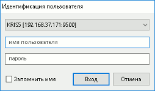
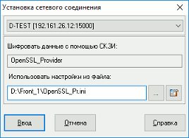

Установление соединения с сервером
- Нажмите кнопку на панели инструментов
либо выберите пункт меню Система / Установить соединение....
Также можно использовать комбинацию клавиш «Ctrl»+«Q».
- При использовании криптопровайдера MP с хранением секретного ключа в неизвлекаемой памяти вставьте ключевой носитель. Соединение с сервером установится автоматически.
- При использовании криптопровайдеров Qrypto32, MP или OpenSSL (со схемой аутентификации «в домене по имени и паролю» или «по имени и паролю») настройте параметры соединения в окне «Идентификация пользователя»:

- Введите имя пользователя (login), указанное при регистрации ключа, и пароль
к нему. При вводе обращайте внимание на правильность выбора регистра
клавиатуры и языка. Пароль может быть изменен.
Если включен признак «Запомнить имя», то при следующем открытии диалога поле «Имя пользователя» автоматически заполнится предыдущим введенным значением.
- Значение поля «Имя пользователя» запоминается при нажатии кнопки «Вход».
- Нажмите «Вход». В случае успешного соединения на экране появится
сообщение системы «Соединение установлено». О возможных ошибках см. Сообщения об ошибках.
- При использовании криптопровайдера MultiPurpose или OpenSSL (со схемой аутентификации «по сертификату пользователя») настройте параметры соединения в окне «Установка сетевого соединения»:

- Наименование криптопровайдера (системы криптографической защиты информации), используемого при шифровании, прописано в поле «Шифровать данные с помощью СКЗИ». В поле «Использовать настройки из файла» укажите путь и наименование файла настроек данного криптопровайдера либо выберите файл с помощью кнопки «…».
- Нажмите «Ввод». В случае успешного соединения на экране появится
сообщение системы «Соединение установлено». О возможных ошибках см. Сообщения об ошибках.
Чтобы отключиться от сервера, нажмите кнопку на панели инструментов
либо выберите пункт меню Система / Разорвать соединение.... Также можно использовать комбинацию клавиш «Alt»+«Q».